Interactive Maps
A collection of interactive web maps built with ArcGIS Maps SDK for JavaScript, Esri Calcite Design System,
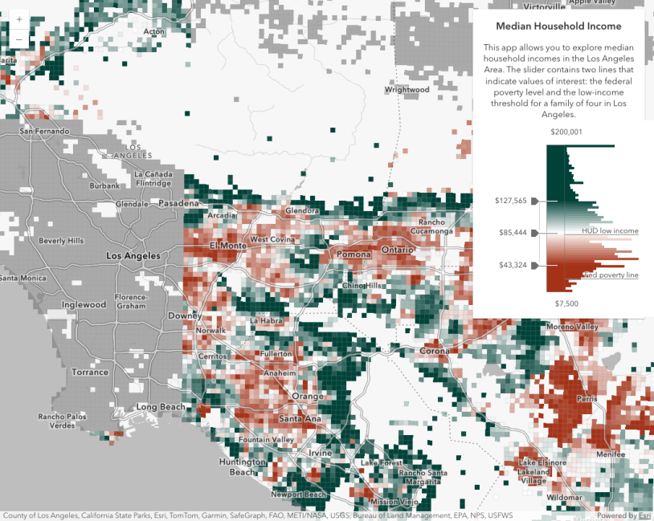
Color Slider Histogram Map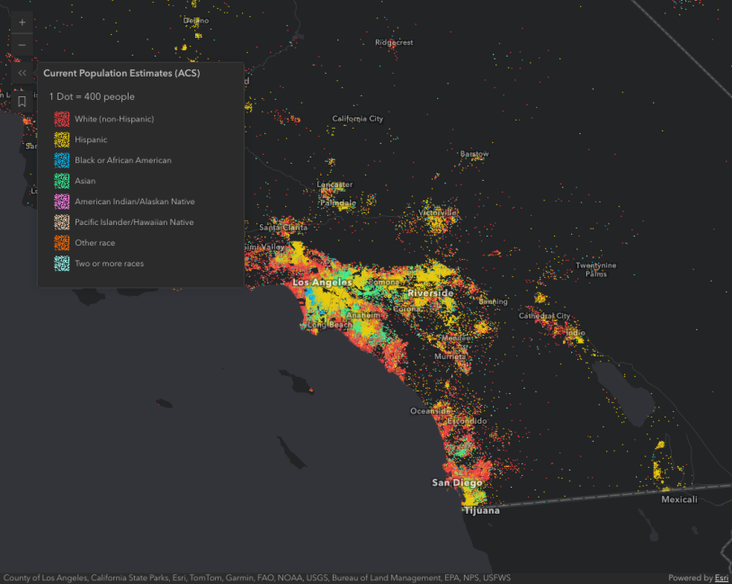
Dot Density Visualization Map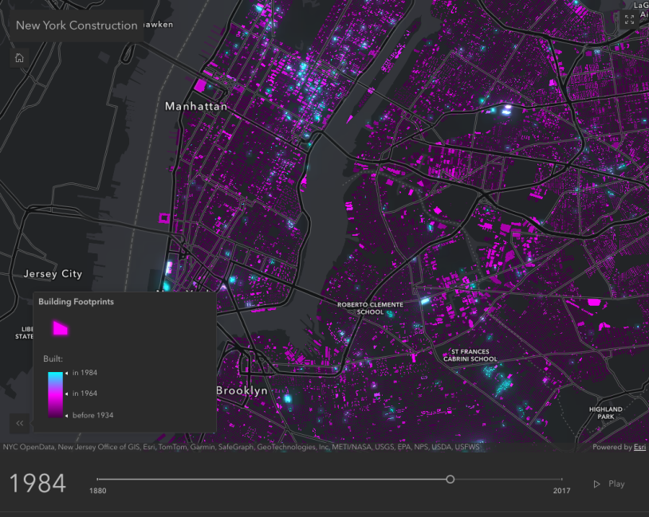
Animate Color Visualization Map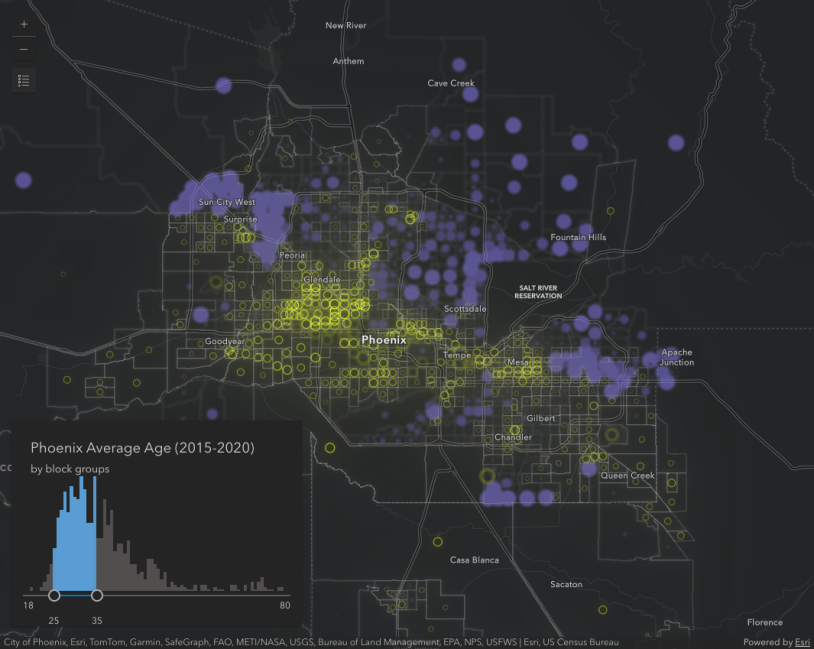
2D FeatureEffect on Chloropleth Map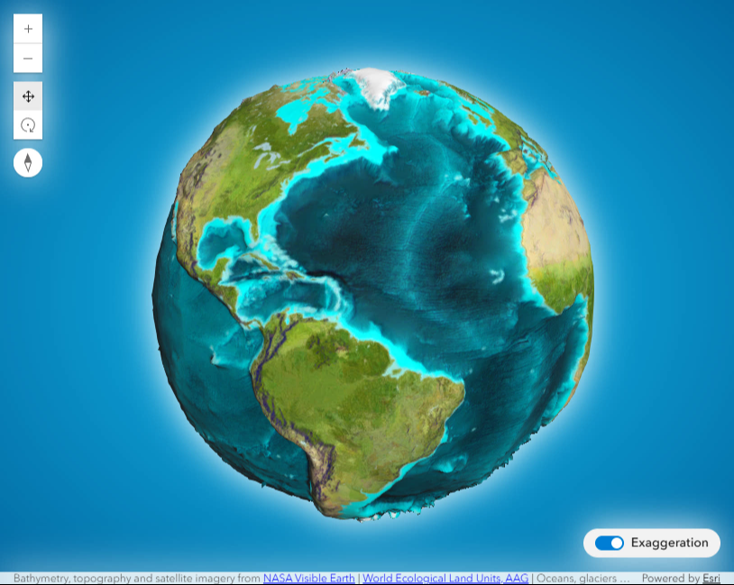
Custom ElevationLayer | exaggerating elevation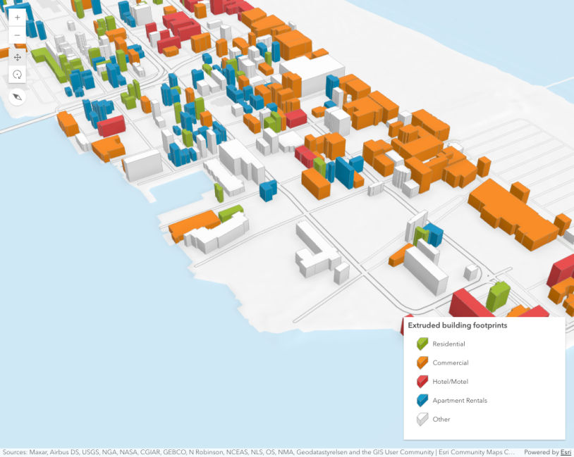
Extrude building footprints based on real world heights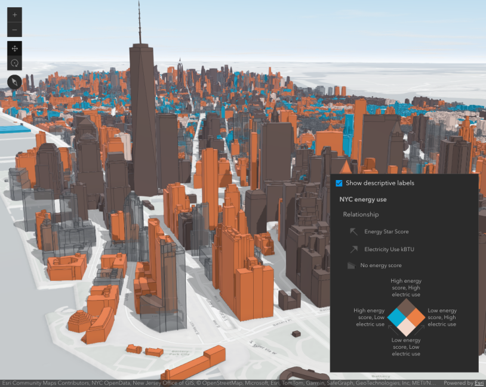
thematic bivariate visualizations of 3D Object SceneLayers.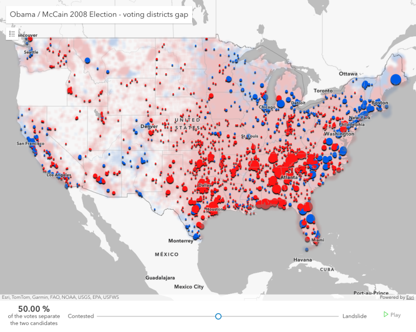
Animate layer view effect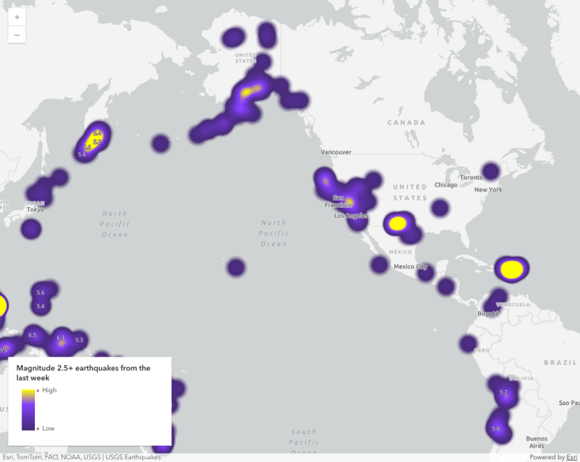
Heatmap Visualization of Earthquakes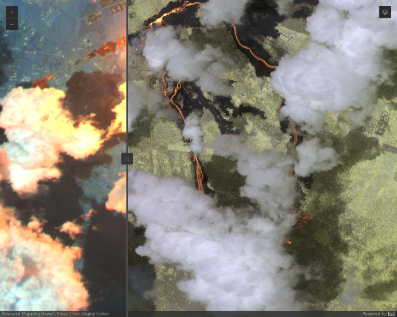
Swipe Layers On Map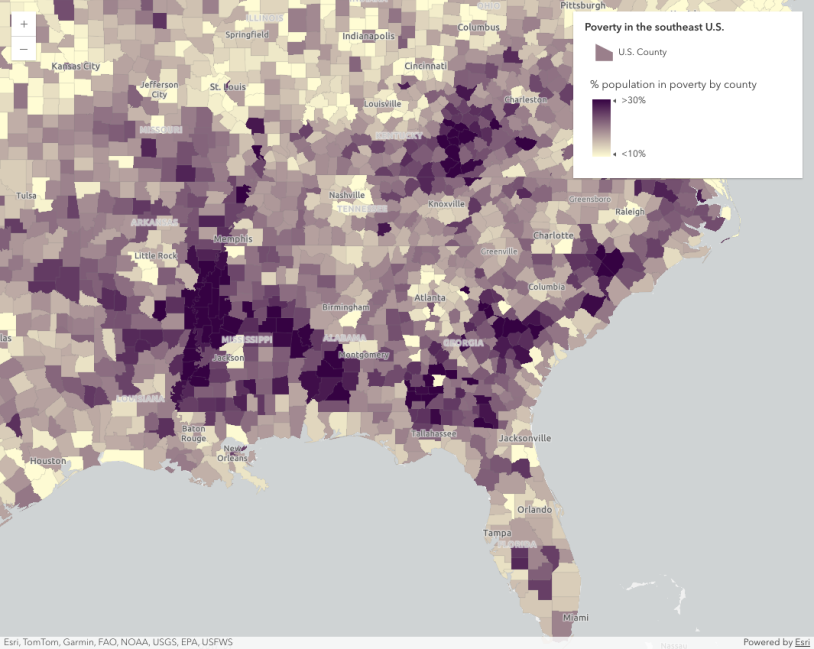
Continuous Choropleth Map